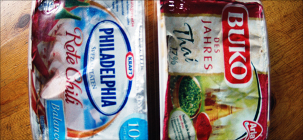

Frischkäse-Erfahrungen

Ich weiß, Phase 5 ist nicht die Stiftung Warentest, und ob ich die werte Leserschaft mit Produktrezensionen heimischer Milchprodukte nerven sollte, ist auch mehr als fraglich. Allerdings ernähre ich mich zurzeit in nicht unerheblichem Maße von Frischkäse, und bin an neuen, leckeren Sorten natürlich immer interessiert.
So habe ich mich denn auch gefreut wie ein Schulkind, als ich im örtlichen Supermarkt die beiden oben abgebildeten Frischkäse-Spezialitäten fand: Philadelphia "Rote Chili" und Buko "Thai". Letzterer ist sogar "Buko des Jahres", was auch immer das bedeuten mag. Ich schnappte mir also schnell jeweils eine Packung, versteckte sie in meinem Wams und verschwand hastig gen Kasse.
Am abend toastete ich mir dann zwei bekömmliche Finn Brøds, verteilte großzügig den neu erworbenen Frischkäse darauf und fiel darüber her. Doch welch herbe Enttäuschung eröffnete sich mir. Diese Scheißdinger schmeckten nach nichts. Das heißt fast, ein Restgeschmack war identifizierbar. Nur war dies kein guter. Des weiteren waren sie lasch. Und das ist jetzt kein Geschwafel à la "Ich bin so hart! Scharf nenn' ich was anderes!" - nein, diese beiden Frischkäse-Enttäuschungen waren nicht scharf, noch pikant, ja nicht einmal würzig.
Dabei sollte man doch sowohl von einem Chili- als auch einem Thai-Frischkäse erwarten, dass er sich irgendwie am Gaumen bemerkbar macht. Deshalb rate ich: Vorsicht im Umgang mit diesen Frischkäses (ist das der korrekte Plural??), ein Geschmackserlebnis wird sich sehr wahrscheinlich nicht einstellen. Ich persönlich bleibe denn auch lieber bei Buko "Mexicana". Der ist zwar auch nicht scharf, schmeckt aber wenigstens lecker nach Chili con Carne. Das ist viel wert.
11 Kommentare zu "Frischkäse-Erfahrungen"
- Externe Links im selben Fenster öffnen
- Externe Links in neuem Fenster öffnen
jksimpson
der korrekte plural von käse ist auf jeden fall käse.
Herschel Rubinstein
okay, das "status"-prinzip. zieht man denn bei käse im plural dann auch das ä in die länge? ein frischkäse, zwei frischkäääääse
jksimpson
also: in manchen norddt. dialekten ist der plural von käse (kèse) offensichtlich käse (keèse). ich habe da nochmal recherchiert, alles was du zum thema käse als wort wissen willst, steht im wiktionary
magnus
Beide Sorten des oben genannten fielen mir auch beim Blick in den Kühlschrank auf! Der sog. "Thai"-F.Käse scheckte meines Wissens nach Kreuzkümmel und Kardamon. Der "Chili"-F.Käse schmeckt wegen seines laschen Geschmacks eher zur Kirschmarmelade.
Klaus
Ahh, meine Korrekturleser =)
jasper.
Ich hab mir neulich den "Julia Brunch" mit italienischen Kräutern gegönnt.
Schmeckt eins A!
Rick
Im Zweifel würde ich heutzutage KäsInnen sagen als Mehrzahl, mit ethisch einwandfreiem Binnen-I. (oder Bienen-I bei HonigInnen).
Und natürlich künstliche Industrie-Frischkäse-Mischungen niemals kaufen. Sondern Chili, Gewürze und Co schnell selber mischen...
jksimpson
Wenn es nach allen Veganern und einem anderen mir bekannten Menschen geht, dann ist sowieso an Käse nichts, aber auch gar nichts ethisch einwandfrei.
Ich selbst steh' ja auch BUKO Ananas, das ist auch n Klassiker.
Klaus
Iiigitt, Buko-Ananas.
Vielleicht sollten wir die Tage mal einen "Frischkäse selber machen" Workshop veranstalten...
TediousNilsen
ohhh ja, wir basteln brotaufstriche ...